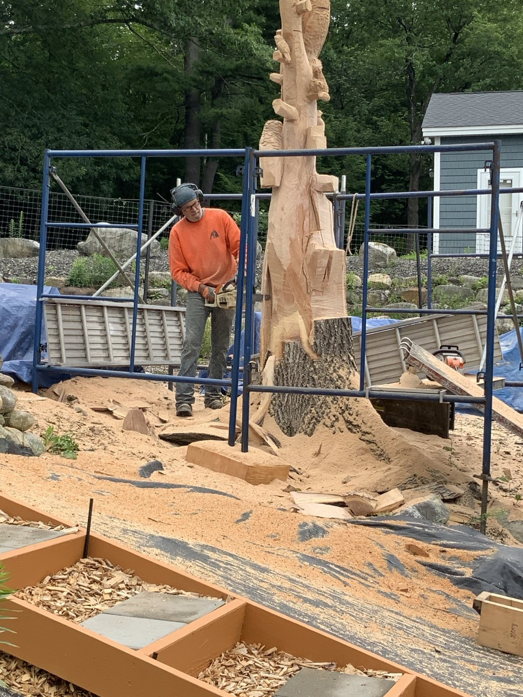
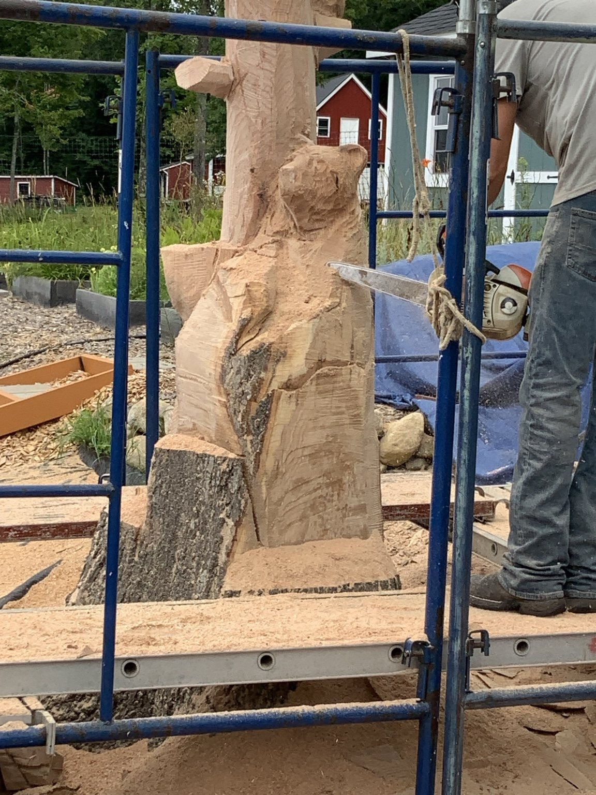

From tree to wildlife sculpture
A large portion of the original tree was intentionally preserved so it could begin a second life as art. Chainsaw artist Dan Burns of Burns Bears, Augusta, Maine, is transforming the standing trunk into a three-dimensional wildlife scene led by a bald eagle.
This page is designed as a self-contained photo story. The direct link opens only the Eagle Tree Carving project, while the project also remains featured on Lou’s Garden Guide.
First cuts and rough shaping
Scaffolding, tools, and guide cuts establish the scale and proportions. Large pieces of wood are removed before the eagle’s head, body, wings, and supporting branches become recognizable.


The eagle and woodland animals emerge
The main eagle gains depth, layered wing feathers, chest texture, and a stronger profile. Smaller animals begin to appear around the trunk, making the sculpture interesting from every side.


Detail, depth, and character
During the third and final documented carving day, feather work became cleaner, the eagle’s expression strengthened, and the bear, owls, woodpecker, and smaller birds became more distinct. Deep cuts blended the wildlife into the natural trunk while the artist refined the sculpture from every side.





